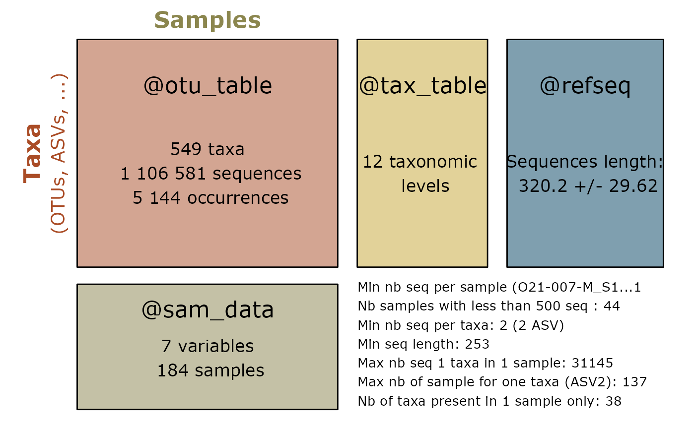

Re-clustering ASVs
ASV (stands for Amplicon Sequence Variant; also called ESV for Exact Amplicon Variant) is a DNA sequence obtained from high-throughput analysis of marker genes. OTU (stands for Operational Taxonomic Unit) is a group of closely related individuals created by clustering sequences based on a threshold of similarity. An ASV is a special case of an OTU with a similarity threshold of 100%. A third concept is the zero-radius OTU zOTU (Edgar 2016) which is the same concept than ASV but compute with other softwares than dada (e.g. vsearch).
The choice between ASV and OTU is important because they lead to different results (Joos et al. (2020), Box 2 in Tedersoo et al. (2022), Chiarello et al. (2022)). Most articles recommend making a choice depending on the question (mclaren2018?), For example, ASV may be better than OTU for describing a group of very closely related species. In addition, ASV are comparable across different datasets (obtained using identical marker genes). (fasolo2024?) showed that that the OTUs clustering of 16S rDNA proportionally led to a marked underestimation of the ecological indicators values for species diversity and to a distorted behaviour of the dominance and evenness indexes with respect to the direct use of the ASV data. On the other hand, (Tedersoo et al. 2022) report that ASV approaches overestimate the richness of common fungal species (due to haplotype variation), but underestimate the richness of rare species. They recommend the OTUs approach in metabarcoding analyses of fungal communities. Finally, (Kauserud 2023) argues that the ASV term falls within the original OTU term and recommends adopting only the OTU terms, but with a concise and clear report on how the OTUs were generated.
Recent articles (Forster et al. 2019; Antich et al. 2021; Brandt et al. 2021) propose to use both approaches together. They recommend (i) using ASV to denoise the dataset and (ii) for some questions, clustering the ASV sequences into OTUs. (García-García et al. 2019) used both concept to demonstrate that ecotypes (ASV within OTUs) are adapted to different values of environmental factors favoring the persistence of OTU across changing environmental conditions.
The goal of the function asv2otu() is to facilitate the
reclustering of ASV into OTU, using either the
DECIPHER::Clusterize function from R or the vsearch software.
Using decipher or Vsearch algorithm
data(data_fungi_sp_known)
otu <- asv2otu(data_fungi_sp_known, method = "clusterize")
#> Partitioning sequences by 5-mer similarity:
#> ================================================================================
#>
#> Time difference of 0.21 secs
#>
#> Sorting by relatedness within 651 groups:
#> Clustering sequences by 9-mer similarity:
#> ================================================================================
#>
#> Time difference of 1.79 secs
#>
#> Clusters via relatedness sorting: 100% (0% exclusively)
#> Clusters via rare 5-mers: 100% (0% exclusively)
#> Estimated clustering effectiveness: 100%
otu_vs <- asv2otu(data_fungi_sp_known, method = "vsearch")The vsearch method requires the installation of Vsearch.
summary_plot_pq(data_fungi_sp_known)
summary_plot_pq(otu)Using lulu algorithm (link to LULU article)
Another post-clustering transformation method is implemented in
lulu_pq(), which uses Frøslev et al.
(2017)’s method for curation of DNA amplicon data. The aim is
more to clean non-biological information than to make explicitly less
clusters. For examples, (Brandt et al.
2021) clustered amplicon sequence variants (ASVs) into
operational taxonomic units (OTUs) with swarm and choose to curate
ASVs/OTUs using LULU.
summary_plot_pq(data_fungi_sp_known)
summary_plot_pq(lulu_res$new_physeq)
Tracking number of samples, sequences and clusters
track_wkflow(list(
"Raw data" = data_fungi_sp_known,
"OTU" = otu,
"OTU_vsearch" = otu_vs,
"LULU" = lulu_res[[1]]
))
#> nb_sequences nb_clusters nb_samples
#> Raw data 1106581 651 185
#> OTU 1106581 363 185
#> OTU_vsearch 1106581 362 185
#> LULU 1106581 549 185Session information
sessionInfo()
#> R version 4.4.3 (2025-02-28)
#> Platform: x86_64-pc-linux-gnu
#> Running under: Debian GNU/Linux 12 (bookworm)
#>
#> Matrix products: default
#> BLAS: /usr/lib/x86_64-linux-gnu/openblas-pthread/libblas.so.3
#> LAPACK: /usr/lib/x86_64-linux-gnu/openblas-pthread/libopenblasp-r0.3.21.so; LAPACK version 3.11.0
#>
#> locale:
#> [1] LC_CTYPE=fr_FR.UTF-8 LC_NUMERIC=C
#> [3] LC_TIME=fr_FR.UTF-8 LC_COLLATE=fr_FR.UTF-8
#> [5] LC_MONETARY=fr_FR.UTF-8 LC_MESSAGES=fr_FR.UTF-8
#> [7] LC_PAPER=fr_FR.UTF-8 LC_NAME=C
#> [9] LC_ADDRESS=C LC_TELEPHONE=C
#> [11] LC_MEASUREMENT=fr_FR.UTF-8 LC_IDENTIFICATION=C
#>
#> time zone: Europe/Paris
#> tzcode source: system (glibc)
#>
#> attached base packages:
#> [1] stats graphics grDevices utils datasets methods base
#>
#> other attached packages:
#> [1] MiscMetabar_0.14.3 purrr_1.0.4 dplyr_1.1.4 dada2_1.34.0
#> [5] Rcpp_1.0.14 ggplot2_3.5.1 phyloseq_1.50.0
#>
#> loaded via a namespace (and not attached):
#> [1] DBI_1.2.3 bitops_1.0-9
#> [3] pbapply_1.7-2 deldir_2.0-4
#> [5] permute_0.9-7 rlang_1.1.5
#> [7] magrittr_2.0.3 ade4_1.7-22
#> [9] matrixStats_1.5.0 compiler_4.4.3
#> [11] mgcv_1.9-1 png_0.1-8
#> [13] systemfonts_1.2.1 vctrs_0.6.5
#> [15] reshape2_1.4.4 stringr_1.5.1
#> [17] pwalign_1.0.0 pkgconfig_2.0.3
#> [19] crayon_1.5.3 fastmap_1.2.0
#> [21] XVector_0.44.0 labeling_0.4.3
#> [23] Rsamtools_2.20.0 rmarkdown_2.29
#> [25] UCSC.utils_1.0.0 ragg_1.3.3
#> [27] xfun_0.51 zlibbioc_1.50.0
#> [29] cachem_1.1.0 GenomeInfoDb_1.40.1
#> [31] jsonlite_1.9.1 biomformat_1.32.0
#> [33] rhdf5filters_1.16.0 DelayedArray_0.30.1
#> [35] Rhdf5lib_1.26.0 BiocParallel_1.38.0
#> [37] jpeg_0.1-10 parallel_4.4.3
#> [39] cluster_2.1.8 R6_2.6.1
#> [41] bslib_0.9.0 stringi_1.8.4
#> [43] RColorBrewer_1.1-3 GenomicRanges_1.56.2
#> [45] jquerylib_0.1.4 SummarizedExperiment_1.34.0
#> [47] iterators_1.0.14 knitr_1.49
#> [49] DECIPHER_3.2.0 IRanges_2.38.1
#> [51] Matrix_1.7-2 splines_4.4.3
#> [53] igraph_2.1.4 tidyselect_1.2.1
#> [55] abind_1.4-8 yaml_2.3.10
#> [57] vegan_2.6-10 codetools_0.2-20
#> [59] hwriter_1.3.2.1 lattice_0.22-6
#> [61] tibble_3.2.1 plyr_1.8.9
#> [63] Biobase_2.64.0 withr_3.0.2
#> [65] ShortRead_1.62.0 evaluate_1.0.3
#> [67] desc_1.4.3 survival_3.8-3
#> [69] RcppParallel_5.1.10 Biostrings_2.72.1
#> [71] pillar_1.10.1 MatrixGenerics_1.16.0
#> [73] foreach_1.5.2 stats4_4.4.3
#> [75] generics_0.1.3 S4Vectors_0.42.1
#> [77] munsell_0.5.1 scales_1.3.0
#> [79] glue_1.8.0 tools_4.4.3
#> [81] interp_1.1-6 data.table_1.17.0
#> [83] GenomicAlignments_1.40.0 fs_1.6.5
#> [85] rhdf5_2.48.0 grid_4.4.3
#> [87] ape_5.8-1 latticeExtra_0.6-30
#> [89] colorspace_2.1-1 nlme_3.1-167
#> [91] GenomeInfoDbData_1.2.12 cli_3.6.4
#> [93] textshaping_1.0.0 S4Arrays_1.4.1
#> [95] gtable_0.3.6 sass_0.4.9
#> [97] digest_0.6.37 BiocGenerics_0.50.0
#> [99] SparseArray_1.4.8 farver_2.1.2
#> [101] htmlwidgets_1.6.4 htmltools_0.5.8.1
#> [103] pkgdown_2.1.1 multtest_2.60.0
#> [105] lifecycle_1.0.4 httr_1.4.7
#> [107] MASS_7.3-65